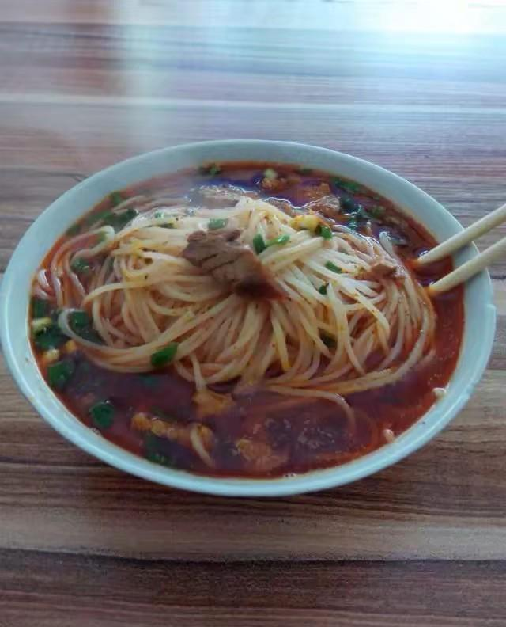

- 项目名称
正宗青树坪米粉
- 项目发起人
琴湖扛把子——陈强
- 项目概况
打造最正宗的青树坪米粉，做湘大最好吃的米粉。

- 市场背景
目前为止，湘大还没有任何一家青树坪米粉店。作为南方人，米粉是我们的日常的主食，所以米粉的市场空间巨大。
而对于从小吃惯了青树坪米粉的我到湘大后，却找不到一碗美味的米粉，所以美味的青树坪米粉前景无限。
- 营销计划
青树坪米粉物美价廉，以每碗8块的价格出售，除去成本一碗净赚4块，以每天卖300碗为基本，一天一千二，一个月三万六，一年除去假期至少三十万。
- 核心竞争力
一般的米粉用的是湿粉，但青树坪米粉用的是纯粮制造的干粉，吃起来有韧劲。这也是青树坪米粉能够征服口味挑剔的青树坪人民的重要原因。
此粉纯粮制造，经青树坪厨师加工后，吃起来回味无穷。其最大的一个特点就是辣，辣得有味道，辣得你越吃越想吃，如果你品尝过第一碗后，保证以后就天天想着吃第二碗，第三碗.....
因此，有好事者传闻，青树坪米粉内加有罂粟，其实哪有啊，如果真的是这样的话，那这些开米粉店的不都是犯法吗？能传出这中重量级的谣言，可见青树坪米粉的美味，绝对不是一般词汇能够描述的.